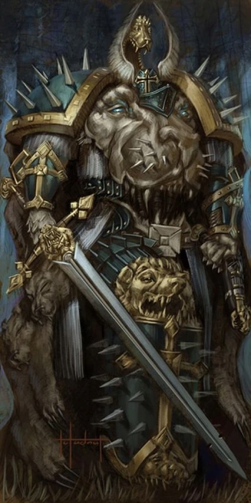

Lion El'Jonson
| Lion El'Jonson Primarch of the I Legion | |
|---|---|
 The Lion in the armour of the Great Crusade, before a banner of the First Legion | |
| Title(s) | The Lion; the First; Primaris Angelus Mortis; Grand Master of the Order; Lord Protector of Imperium Secundus; the Cowled Giant |
| Allegiance | Imperium of Mankind (loyalist) |
| Legion | I, the Dark Angels |
| Homeworld | Caliban (destroyed) |
| Life | |
| Created | c. 792.M30, Terra |
| Discovered | 846.M30, by the Emperor of Mankind |
| Lost | Early M31 (after the Horus Heresy), at the destruction of Caliban |
| Awoke | Early M42, during the Arks of Omen campaign |
| Status | Active, roaming the Imperium Nihilus and the Imperium Sanctus |
| Relatives |
|
| Wargear | Lion Panopoly; Lion Helm; Fealty; the Emperor's Shield; the Wolf Blade; the Lion Sword (lost) |
| Known for | The Great Beast crusade of Caliban; the Rangdan Xenocides; Imperium Secundus; the duel with Luther |
Lion El'Jonson, known as the Lion, was the primarch of the I Legion, the Dark Angels. He was the first of the twenty primarchs to be created and the first whose Legion was raised, and his titles include the First and Primaris Angelus Mortis, "First Angel of Death". He grew to manhood in the monster-haunted forests of Caliban and rose to be Grand Master of the knightly Order of that world before the Emperor of Mankind found him in 846.M30. His Legion was the grimmest and most secretive of the Great Crusade, and he held it as the Emperor's watchman on the edge of the Imperium.[1]
During the Horus Heresy the Lion fought on the outer marches of the Imperium and was unable to reach Terra before the end of the Siege of Terra. He returned to Caliban afterward, and was betrayed there by his foster brother Luther, who had come under the sway of the powers of Chaos. The duel between the two destroyed Caliban and shattered the Legion that Luther had suborned into the Fallen. The Lion was spirited from the Warp into the heart of the Rock, the fragment of Caliban that survives as the fortress-monastery of the Dark Angels, where he slept for ten thousand years. His survival was known only to the Emperor and to the Watchers in the Dark.[1][2]
In the early 42nd millennium the Lion woke, during the campaign called the Arks of Omen. He has been seen on many worlds of the Imperium Nihilus, where he has fought daemons, and has been accepted by the Dark Angels as their lord. He is one of two primarchs now active in the Imperium. The other is Roboute Guilliman, the Lord Commander.[2][3]
Early life
[edit]The forest world
[edit]The capsule containing the Lion came to rest on Caliban, a feudal world of vast forests and a small human population, in the Segmentum Obscurus, near the Eye of Terror. Its woods were inhabited by Great Beasts, mutated monsters that Imperial savants link to the Warp's influence in the centuries after the birth of Slaanesh. The people lived in fortress-monasteries run by knightly orders, who held a few relics of the pre-Strife technology, including crude power armour and bolt pistols, and rode to war on horseback.[1]
The infant primarch survived alone in the forest. The Order's chroniclers disagree on the length of his time there. The knights who found him judged that he had lived alone for about a decade, but the growth of the primarchs does not follow human patterns, and local legends of a forest spirit, small in stature but man-shaped, go back nearly a century before his discovery. The Lion himself spoke of that time seldom. He learned silence from the beasts that hunted him, and learned to fight only when he could win.[1]
Luther and the Order
[edit]A hunting party of The Order found the young Lion in the depths of the forest. Some of the knights wished to slay him as another beast, but their champion, Luther, argued for mercy and took him into his own care. Luther named him Lion El'Jonson, which in the Calibanite dialect of Low Gothic means "the Lion, Son of the Forest", and raised him as a knight. He taught the Lion the laws of the Order, to mete out justice as a man rather than as a beast, and gave him a reason to fight beyond survival. The Lion learned to speak with extraordinary speed and mastered Calibanite culture faster than anyone, including Luther.[1][4]
Caliban was a dying world, its people besieged by the Great Beasts. The Lion rose in the Order, whose chief fortress-monastery was Aldurukh, and called for a crusade to exterminate the beasts. The war lasted nearly a decade. The Lion fought it without mercy: he ambushed the beasts at their feeding places, poisoned their water and burned great tracts of forest. He ended the old rule that only nobles could be knights, and any order that refused his lead, such as the Knights of Lupus, was destroyed. At the end of the war the Lion was made Grand Master of the Order, and the people asked him to rule Caliban. Luther, who had once competed with him as an equal, was left in his shadow. The old Calibanite chronicles record the beginning of a resentment that would end in tragedy.[1][4]

The Great Crusade
[edit]The coming of the Emperor
[edit]The Emperor reached Caliban in 846.M30 with an honour guard of about five hundred Space Marines of the I Legion, who wore black armour and mortuary symbols. The old tales of the Calibanites, in which dark angels descended on pinions of fire, were recalled, and the knights believed that the myth had been fulfilled. The Lion duelled the captain of the Legion's company, left him wounded in the dust, and accepted the Legion as his own. From that day he called the Space Marines of the I Legion his "Dark Angels", and the name spread through the Legion.[1]
The Emperor made Caliban a part of the Imperium, gave the Lion command of the I Legion and of the 4th Expeditionary Fleet, and arranged for the planet to be strip-mined for the crusade. A few conservative knights tried to assassinate him and were executed by the Astartes. The Lion left for Terra to learn from his father, taking Luther, who had agreed to serve in the Legion as a full-ranked officer, though not as a Space Marine proper, since he was not fully enhanced.[1]
Reorganising the First
[edit]The Legion that the Lion inherited had been the first to be raised and had long been without a primarch. It numbered about a hundred thousand when he gathered it at its old stronghold on Gramarye, where a council of masters awaited him. He swore a new oath to the Legion on the Legion's chantry floor, and set about reorganising it into wings in the style of Caliban's knightly orders. He mixed the old Legion's Hexagrammaton with Calibanite customs and began to recruit new Space Marines from the Order. For the old veterans, the change was jarring, but it set the pattern of the Dark Angels as an order of knights.[1]
The Legion's early campaigns under the Lion included the relief of an Ultramarines force on Karkasarn, the compliance of the Knight World of Molech, and the Second and Third Rangdan Xenocides, fought from about 862.M30. The Dark Angels held the northern edge of the Imperium, near the Halo Stars, against the Rangda for almost a decade, and the Legion suffered the loss of some fifty thousand Space Marines by the Third Xenocide. The sacrifice of the old Legion at Morro, Morcar and Vorksag was the price of victory. Some Dark Angels whispered that the Lion had sent them to their deaths to replace them with more tractable Calibanites. The Legion was replenished from Caliban after the war.[1]
In the late Great Crusade, the Dark Angels spread out in expeditionary fleets, each assigned to a different part of the Imperium, with few fixed strongholds. The Lion kept to himself, and his brothers called him taciturn, moody and uncompromising. He thought the war on Caliban had been the first part of a larger war against the monsters of the galaxy, and he had no patience for Sanguinius' chivalry, Mortarion's hatreds or Fulgrim's taste for beauty.[4]

The Horus Heresy
[edit]The Gordian League and Diamat
[edit]In the final years of the Great Crusade the Dark Angels were despatched to the Shield Worlds of the Gordian League, a confederation allied with degenerate xenos. Several primarchs believed that Horus had arranged this deployment to remove the Legion from the Imperium's heartland. In 005.M31 the Dark Angels learned of the rebellion and of the atrocity on Isstvan III. The Lion could not reach Isstvan in time, so he sent a fast raiding force to Diamat in the Tanagra System, to seize the siege machines known as Ordinatii that Horus had ordered, and destroyed the star port. He later gave the machines to his brother Perturabo, who was already in the Traitors' service, and who accepted the gift without revealing it.[5]
The Thramas Crusade
[edit]Konrad Curze led the Night Lords against the Heroldar and Thramas systems, a campaign meant to delay the Dark Angels, which lasted almost three years. Curze lured the Lion to a parley at Tsagualsa, where the two primarchs came to blows. The Lion was nearly strangled before a Dark Angels guardsman drove a sword through the Night Haunter's back, and both Legions dragged their commanders apart. At Perditus the Lion seized an ancient sentient engine, the Tuchulcha Engine, which allowed precise Warp jumps, and killed the greater daemon Kairos Fateweaver, who tried to turn him to Chaos. He later re-established the Legion's Librarians, in violation of the Emperor's Decree Absolute, to fight daemons, and killed the Chaplain Nemiel in a dispute over it. He ambushed the Night Lords fleet in transit and mortally wounded Curze, who escaped and later crept aboard the Lion's flagship to hunt its crew.[5]
Imperium Secundus
[edit]The Ruinstorm cut the Dark Angels from Terra, and the Legion could only reach Ultramar by following a beacon on the world of Sotha. At Macragge the Lion met Roboute Guilliman and Sanguinius, and the three founded Imperium Secundus. The Lion was made its Lord Protector and supreme commander of its forces. Curze escaped from the flagship and rampaged across Macragge. The Lion and Guilliman cornered him but were nearly killed when he brought down a chapel on them, and were saved by the loyalist Iron Warriors' Warsmith Barabas Dantioch, who reached through the beacon's portal.[5]
In 011.M31 the Lion followed a trace of Curze to the Zepath System, where Dark Angels destroyed the Word Bearers and World Eaters in the city of Numentis. After quarrels with Guilliman over how to find Curze, he broke the Night Haunter's spine in the city of Alma Mons and brought him to trial before the other two. Curze accused the Lion of having ordered a bombardment in violation of Guilliman's orders. Guilliman broke the Lion's sword across his thigh and Sanguinius dismissed him, and the Dark Angels withdrew from Macragge.[5][a]
Within hours the Lion returned. He told Sanguinius, who was about to execute Curze, that the Night Haunter's prophecy of his own death at the hands of an assassin sent by the Emperor was proof that the Emperor lived beyond the Ruinstorm. He knelt before his brothers and promised to be Curze's gaoler. The three abolished Imperium Secundus and fought their way toward Terra.[5]
Davin
[edit]At the Second Battle of Davin the Lion and Guilliman fought beside each other for the first time as partners. The Lion nearly ordered the world burned from orbit and recoiled in horror at the thought. On the surface, in the Serpent Lodge where Horus had first been corrupted, he and Guilliman brought down a Soul Grinder while Sanguinius fought the daemon Madail. The world was destroyed with cyclonic torpedoes, and the breach that opened allowed the Blood Angels to race to Terra. The Lion and Guilliman led the Dark Angels and Ultramarines in a diversion.[5]
The Crusade of Vengeance
[edit]The Lion struck at the Traitor homeworlds to draw their forces away from Terra. By the Imperial accounts, the Dark Angels destroyed Chemos and Barbarus. At some point the Astronomican went dark for the fleet, and the Lion, fearing that Terra had fallen, pledged himself to vengeance. He met Corvus Corax and Leman Russ at Deliverance and criticised Corax for his absence from the front; Russ calmed him, and agreed to join the "Crusade of Vengeance" with a Space Wolves force armoured in Corvus-pattern power armour. The fleet reached Terra after the Emperor had been entombed.[5]
The fall of Caliban
[edit]After the Heresy the Lion returned to Caliban, which had been cut off from the Legion by the Ruinstorm, to restore the Legion. As his fleet arrived, it was fired upon by the defence batteries on the surface. Luther, the world's garrison commander, had fallen under the influence of Chaos and had turned many of the Dark Angels who remained. The Lion learned this from a merchant ship, and led a force against the fortress-monastery of the Order. He found Luther, a Chaos champion made equal to a primarch by the gifts of the powers, and fought him in a duel that levelled the fortress. The bombardment from the Dark Angels' fleet and the Warp storms raised by Chaos cracked Caliban's crust, and the world broke apart.[1]
The duel ended with a psychic blow from Luther that appeared to kill the Lion. Luther then realised what he had done, the Imperial record holds, as if a veil had fallen from his eyes, and he put down his weapon. Those Dark Angels who had followed him were drawn into the Warp and scattered across the galaxy, and the Dark Angels ever after have called them the Fallen. Only the Order's fortress-monastery, protected by its force fields, survived the destruction of Caliban. It is the Rock.[1]
The long sleep
[edit]The Dark Angels who landed on the ruins found Luther mumbling that the Lion had been taken by the Watchers in the Dark and would return to forgive him. They found no sign of their primarch, and held that he was lost. Luther was imprisoned in a stasis cell in the depths of the Rock, a secret known only to each Supreme Grand Master of the Chapter, who guards the Sword of Secrets, the only key. The Dark Angels and their successors, the Unforgiven, made it their duty to hunt the Fallen and compel their confession.[1]
The Lion, meanwhile, was briefly drawn into the Warp, and was taken by the Watchers in the Dark to a hidden chamber at the heart of the Rock, where he was held in a dreamless sleep. This secret, known only to the Emperor and the Watchers, was kept from even the Supreme Grand Masters. Some Dark Angels whispered that the Lion would return to lead a last crusade, bringing justice to the Fallen. The newest account of the Dark Angels, which rests on the testimony of the Watchers, holds that the Lion slept for ten thousand years. Earlier Imperial records list him only as lost, or as dead, and the Chapter did not correct them.[2][4]
The Era Indomitus
[edit]
Awakening
[edit]In the early 42nd millennium, during the Arks of Omen campaign, the Lion woke at last in the heart of the Rock. He was the first primarch to return after Guilliman. His awakening was not announced; the Dark Angels learned of it only when he emerged. Long before his return reached the wider galaxy, however, the Lion's legend had begun to spread from planet to planet within the Imperium Nihilus, as isolated worlds reported a cowled giant who stalked out of mist-wreathed passageways to cut down monsters. His arrival was always heralded by the appearance of a strange fog. The people of those worlds called him the Cowled Giant, the Unforgiving Knight, or, mistakenly, the Emperor Incarnate.[2][4]
The Dark Angels attribute this to a new ability that he acquired during his sleep: he can travel through the Warp by a region that he calls Mirror-Caliban, in which, the Lion has said, the ghosts of the destroyed forests of his world carry him. Only the Lion knows how his power works, and he is not saying. It allows him to appear without warning on any world.[2]
Return to the Dark Angels
[edit]The Lion found Fallen Angels on many of the worlds that he reached. In the early years of his return, he forgave some of them and took them into his service as the Risen, bidding them atone for their treason by fighting. He established alliances among the worlds of the Imperium Nihilus, which the Dark Angels name the Lion's Protectorate. During the Arks of Omen he returned to the Dark Angels and the Unforgiven and took command of them, and fought the Daemon Primarch Angron of the World Eaters, among other Chaos enemies.[2]
The Lion has fought the same enemies as Guilliman, but Imperial records say little of any meeting between the two, and the quarrel at Imperium Secundus is not known to have been resolved.[3]
Character and abilities
[edit]The Lion is the grimmest and most closed of the primarchs. His brothers describe him as dour, quiet and prone to dark moods, hunting and planning even in council. Malcador the Sigillite recorded that his silence was unnerving, and that he moved at a council of war "like an apex predator".[1] He distrusts the Imperium's institutions, and in particular the secrecy and treachery that surround them, and has long been convinced that the true enemy is the Chaos that dwells in the Warp. He can be merciless: his orders to burn the Great Beasts, his use of the Tuchulcha Engine and his near-order to destroy Davin are all attested. He is also capable of mercy, which his decision to forgive some of the Fallen shows.
As a warrior he was among the strongest of the primarchs. He was an outstanding commander, with a gift for ambush, deception and the selection of the one blow that would break an enemy. He stalemated Guilliman's strategy and matched swords with Fulgrim. He is often described as the hunter among the primarchs, and the Dark Angels as the hunters among the Legions.[4]
Wargear
[edit]Great Crusade and Heresy
[edit]- Lion Panopoly: artificer armour built to the Lion's specification, with a lion-head pauldron and the pelt of a Great Beast.[1]
- Lion Helm: a sacred relic of the Dark Angels, presently in the form of a winged Mark VII helm, carried by a Watcher in the Dark. It has a built-in force field. The Supreme Grand Master Azrael wears it in the Lion's absence.[2]
- Lion Sword: the Lion's great sword, broken in antiquity and lost. It is rumoured to be carried by the Fallen Angel Cypher, who seeks to reforge it and present it to the Emperor, in the hope of absolution for the Fallen.[2]
- Wolf Blade: a two-handed chain-blade, an eviscerator, that the Lion sometimes carried.[1]
Era Indomitus
[edit]- Fealty: a primarch-sized power sword in the style of the arming swords of the knights of Caliban.[2]
- The Emperor's Shield: an auramite shield once carried by the Emperor himself, which gives great protection and reflects the force of blows back at the attacker.[2]
- A revised Lion Panopoly and an assortment of helms, including the Lion Helm.
He is attended by two Watchers in the Dark, who carry his helm and other relics.
Legacy
[edit]The Dark Angels and the Unforgiven revere the Lion as their founder and have followed his tradition of secrecy and hunt. His doctrine, the "tenets of strategy and supremacy", is preserved in the Legion's chantries, and its instruction that one should "determine that which your foe prizes the most" and site heavy weapons to overlook it is quoted by every Dark Angels company.[1] His return has transformed the Chapter and its relationship to the Imperium. For the first time in ten thousand years the Dark Angels have a primarch to lead them, and the Unforgiven have been given their first hope of redemption for the Fallen.
See also
[edit]Notes
[edit]- ^ The Ultramarines and Dark Angels records of the quarrel differ. The Lion's own account, preserved by the Dark Angels, holds that he never ordered the bombardment.
References
[edit]- ^ a b c d e f g h i j k l m n o p q Liber Primarchus (M32, revised M41). Administratum Archive, Terra.
- ^ a b c d e f g h i j Records of the Indomitus Crusade (ongoing). Office of the Lord Commander.
- ^ a b Codex Imperialis (rev. 980.M41). Adeptus Terra.
- ^ a b c d e f Annals of the Dark Angels (sealed, rev. 003.M42). The Rock.
- ^ a b c d e f g Chronicles of the Heresy (sealed). Logos Historica Verita, Terra.
Further reading
[edit]- Annals of the Dark Angels (sealed, rev. 003.M42). The Rock. The Chapter's own record of the Lion's return.
- Liber Primarchus (M32, revised M41). Administratum Archive, Terra.
- Records of the Indomitus Crusade (ongoing). Office of the Lord Commander. References to the Lion's campaigns in the Imperium Nihilus.